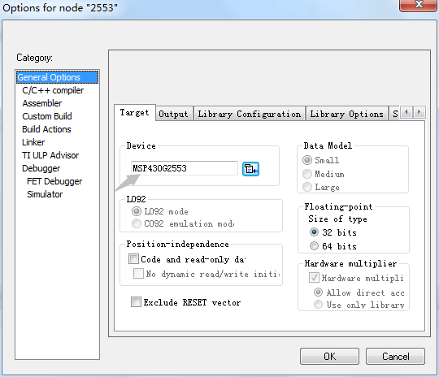
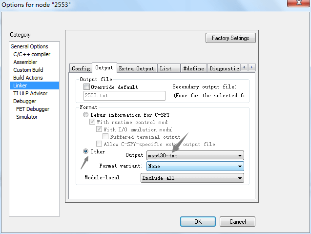
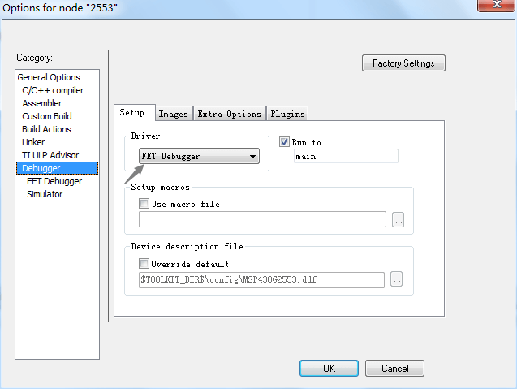
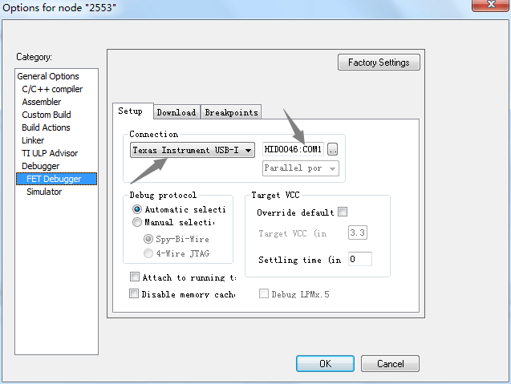
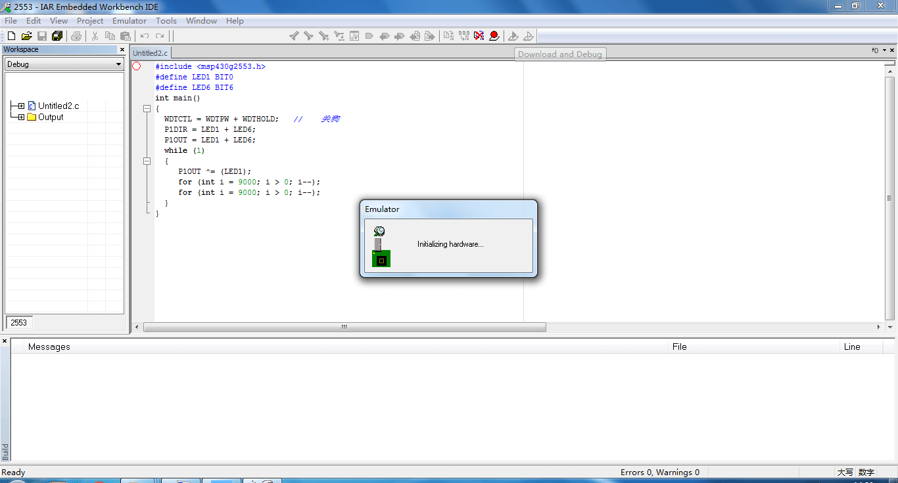
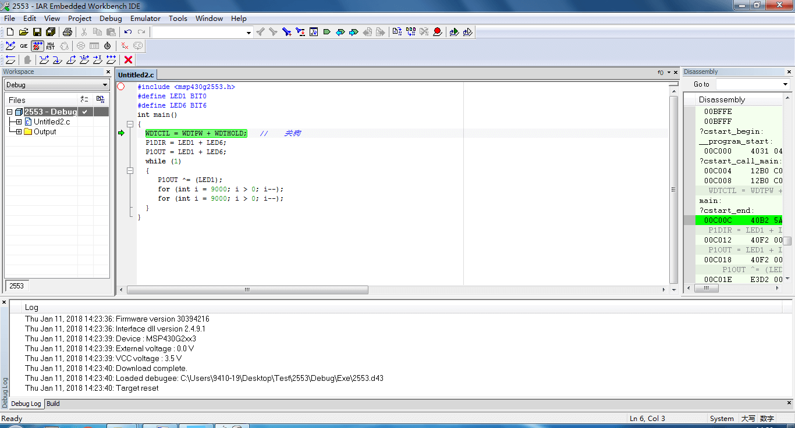

生成烧录文件
Create New Project选择Empty Project。这个看个人喜好，我一般会选择创建空的工程。`- 在
File新建一个 Document 用于编写程序，保存时注意添加后缀.c，然后（Add）添加进工程。xxx.h等自己编写的头文件也可如此添加。 - 在工程的
General Option->Device选择对应的单片机型号。MSP430f149 单片机使用 BSL 工具进行烧录，所以需要生成.txt格式的文件，在Linker->Output下选择Other，即 Output 为 msp430-txt。 Compile编译通过后，点击Make，就可以在工程的文件夹的 Debug/Exe/ 目录下看到生成的 .txt 文件。- 使用 BSL 工具装载烧录文件，点击执行。这一步常见的错误有 ：打开串口出错、BSL 初始化失败。通过搜索可以解决。
截图
- 选择相应的单片机型号

- 生成烧录文件

在线仿真
这里指的是不需要生成烧录文件，即不需要通过 BSL 等烧录软件转载烧录文件，可以使用 IAR 的 Download and Debug 一键将程序下载到单片机中。注意以下配置：
Option下首先选择Debugger，在Setup页面中的 Driver 栏选择 FET Debugger 。- 其次，选择
FET Debugger， 在Setup页面中的 Connection 栏选择 Texas Instrument USB-IF ，然后再选择旁边的 COM口。
截图
- 配置 Debugger

- 配置 FET Debugger

- 配置完成、下载程序

